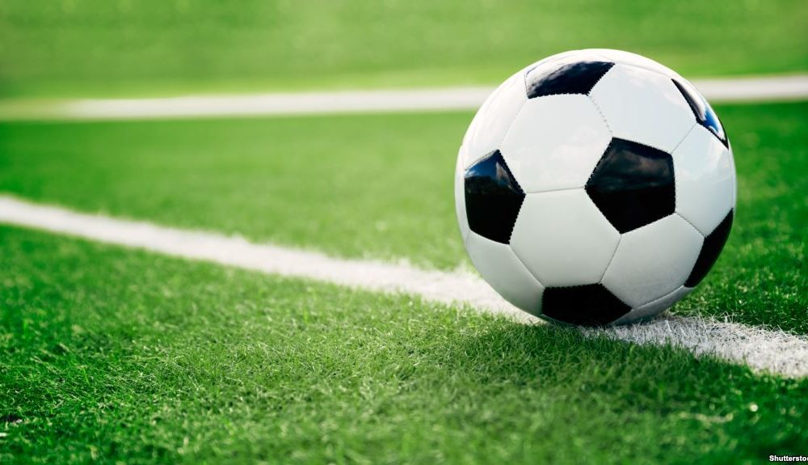

Football
Le football est mon sport préféré. C'est un sport d'équipe où la stratégie, la rapidité et la coordination sont essentielles. J'aime jouer au football pendant mes temps libres avec mes amis. L'excitation du jeu et l'esprit d'équipe me motivent à donner le meilleur de moi-même sur le terrain.
Ping Pong
Le ping pong est un autre sport que j'apprécie énormément. C'est un sport rapide et exigeant qui demande une grande précision et des réflexes aiguisés. J'aime pratiquer ce sport avec mes amis lors de compétitions amicales ou tout simplement pour le plaisir.

Échecs
Les échecs sont un jeu de stratégie par excellence. J'apprécie l'aspect mental du jeu, qui me permet de développer ma réflexion et ma capacité à anticiper les mouvements. C'est un jeu qui m'a appris la patience et l'importance de la planification dans la prise de décision.